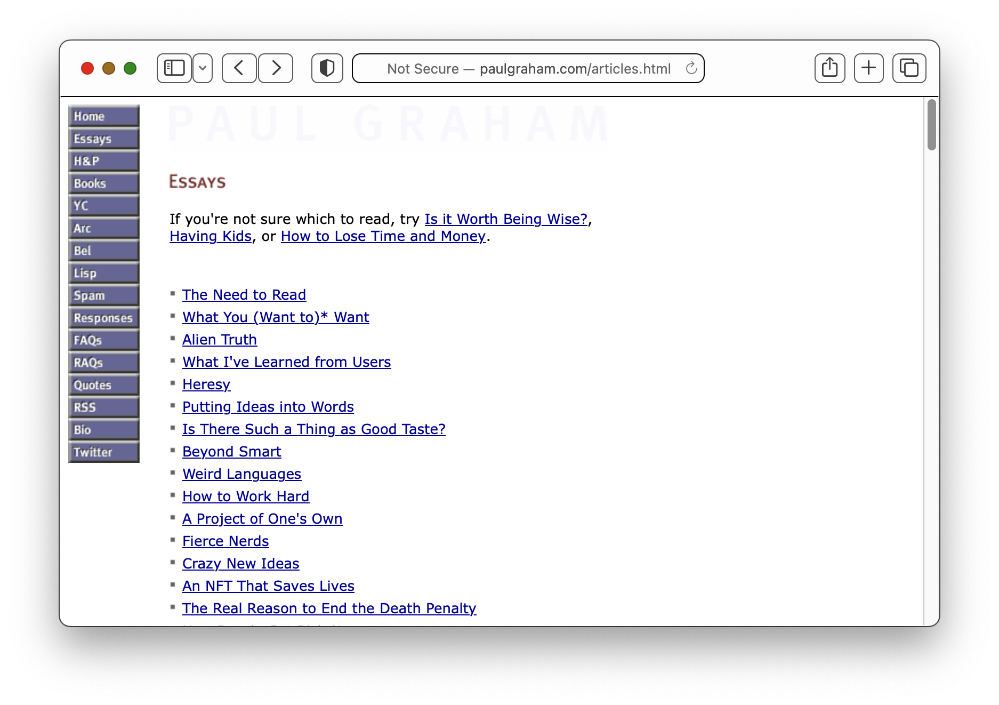

Introducing Foresite: An extremely minimal static site generator
2023-01-17
Over the past week, I’ve been tinkering with building a static site generator. I’m calling it Foresite.
Does the world need Yet Another Static Site Generator? I don’t know. What I do know is that when I’ve attempted to use a popular generator like Hugo or Jekyll I crave something simpler than what they offer.
I don’t presume my interest in simplicity makes me unique. If you search for advice on a “simple” or “minimal” static site generator you generally see one of two answers:
- “I use [Jekyll/Hugo/Next/Eleventy] and I think it is simple!”
- “Just use HTML & CSS!” -__-
So while it could be that “something simpler” motivated some if not all of the 347 generators listed on the Jamstack site many of these have ended-up looking more alike than different.
Peruse the list and you’ll see a lot of features in common: themes, layouts, plugins, multiple templating languages, tagging, Sass, React/Vue/Svelte etc.
But what about the users who don’t need nor want most of those features? What if the best “feature” is the fewest features possible? What if lacking features makes the site better?
From “Low-code” to “Low-feature”
The genesis of Foresite came from my familiarity with Paul Graham’s website.
Graham’s list of essays are some of the best known writing about software and startups. Yet despite the dated styling and layout of Graham’s, consider his implementation.

What it has:
- All posts are static HTML
- A single list of posts is shown on the
articles.htmlpage
What it does not have:
- No comments
- No tags or categories
- No “Read more” links or pagination
- No images (AFAIAA)
No mobile-friendly layout(Edit: If you view the site on mobile you do get an alternative version)- No JS (Desktop version)
- No CSS(!) (Desktop version)
- No search (Desktop version, though the mobile version doesn’t seem to work anyway)
- No enter-your-email-to-subscribe
Much of what Graham’s site lacks are oft-touted features of many static site generators (and table-stakes for dynamic content management systems like Wordpress/Drupal, and SAAS platforms like Medium/Substack).
Would adding these features make Graham’s site better?
I say no.
What Graham’s site lacks is fundamental to its long-standing value. It doesn’t look nor try to look like anything else. And it doesn’t care.
Moreover, in an age of walled gardens, Graham’s homespun pages recall a simpler and more individualized age where intrigue and craft were the ethos of the world wide web.
The good news is that none of this is behind us. It’s all still here.
Creating Foresite
“If there’s a book that you want to read, but it hasn’t been written yet, then you must write it.”
– Toni Morrison
Here’s what I wanted to have:
- Posts written in markdown
- A single wrapper template for consistency
- CLI executable that converts markdown to HTML wrapped in the template
- Lightweight, few dependencies
- Simple to use & understand (i.e. boring technology)
- …and not much else
Language
I decided to use Ruby. It is widely available, has a good standard library, and installing a gem is a one-liner that can
provide global executables without fussing with $PATH etc.
The templating uses Ruby’s built-in ERB. I didn’t see myself needing a lot of other features that other templating languages provide, and ERB is pretty easy to understand.
Content structure
Three subdirectories: md, post, and erb.
Each piece of content is a markdown file in a md subdirectory. Each markdown file is named with a date prefix in ISO
8601 YYYY-MM-DD and title slugified (lowercase & hyphenated).
Generated HTML for every md file lives in a post directory. The HTML file names mirror the markdown file names.
Templates live in an erb subdirectory.
Templates
Three templates: post.md.erb, wrapper.html.erb and _list.html.erb.
post.md.erbfor the default markdown used when writing a new post. By default it the title formatted as H1 and single paragraph showing the date.wrapper.html.erbfor the wrapper template that builds the page structure._list.html.erbas a partial to form a list of posts in reverse-chronological order on anindex.htmlpage, similar to Graham’s essay page.
Workflow
More detailed steps are available in the Foresite README
- Install foresite using
gem install foresite(or use Bundler if you want). - Start by creating a project directory for your site. For me, this is my GitHub pages repo directory.
- From within the project directory, run
foresite init, which will create the subdirectories and templates in theerbsubdirectory. - Create a new post by running
foresite touch "Hello World". A markdown file is generated with today’s date, e.g.md/2023-01-17-hello-world.md. - Edit the markdown post to your satisfaction.
- Change the
wrapper.html.erbto get the style and layout to your tastes. Try being minimal, e.g. just use an inline<style>tag! - Generate HTML by running
foresite build. An HTML file is generated in thepostsubdirectory e.g.post/2023-01-17-hello-world.htmlthat has the parsed markdown wrapped in the wrapper template. At the root-level directory, anindex.htmlfile is generated that shows a list of links with dates to the HTML files in thepostsubdirectory.
That’s it. The post you are reading right now was built using Foresite.
The future
I’ve never been a blogger, and starting has always seemed to be an obstacle. But creating this tool has given me a new energy to start creating, free of obstacles (hopefully). I am eager to see if it will motivate me to write more.
If anything I’ve written here resonates with you, I hope you will give Foresite a try.
Thanks.